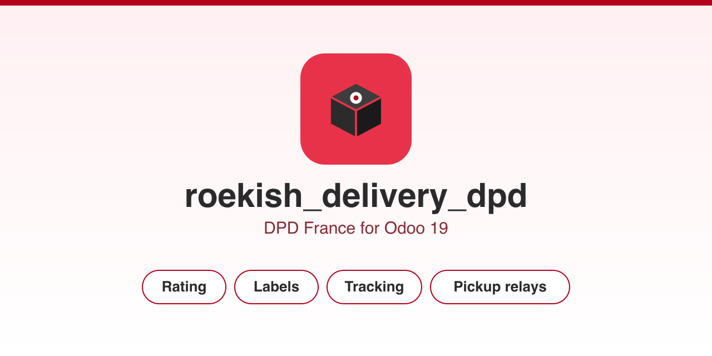

Rate shipments, generate labels, track parcels and offer Pickup relay delivery, straight from Odoo.
Three ready-to-use carriers ship with indicative 2026 rates, which you replace with your own contract rates: DPD Predict, DPD Relais and DPD CLASSIC Europe. Zones cover metropolitan France, Europe zone 1 (Germany, Belgium, Luxembourg, Netherlands), Europe zone 2 (rest of Europe, United Kingdom, Switzerland) and Intercontinental.
The module builds on Odoo's native delivery framework. Rating and relay
search work with no external library. Label generation uses
roulier, optional and imported on demand.
Deploy the module on the addons_path (Odoo.sh or On-Premise).
The Apps > Import Module zip upload is data-only and cannot install a
module that ships Python models. On Odoo Online (SaaS) Python libraries
cannot be installed either, so label generation needs Odoo.sh or
On-Premise, where roulier is available.
AGPL-3.0 licence. Published by ROEKISH.